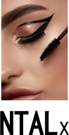

Local currency system for our community of Ottawa, Canada!
No money cost to join & participate! No risk or obligation
Buy and sell your Art, Crafts, & Services to and from other members using local currency called
NTAL Credits
-- or set your price mixed $$$ cash & Credits Use the Form below to Join!
At this moment Sep17 2026, the benefit for most people is a supplement.
You find someone who can offer something you want -- or wants what you can offer.
You save a bit of money, and you make connections with real people in the community. .
However there is increasing talk about money system change. A reset of US Dollar; banks creating a Digital Dollar that will track what you buy. But worse than that, AI is out of control. It is entirely posible for AI to delete everybody's bank account information.
All that is on top of an increasingly competitive economy. People are working 3 short term contract jobs to pay for the basics of life. Global supply chains are being destroyed, prices will go through the roof.
So maybe it is time to think about alternatives. Local currency based on real goods & services. So you have something to go to if the finance system crashes. Join Form Click Here
Special for Volunteers: If you volunteer for any organization or nonprofit group in Ottawa, NTAL will give you 1 Credit per volunteer hour --up to a max of 100 per year.
Someone wants Your Talents! Someone has skills or items you are looking for!
---Do you create Art, Crafts, Beauty-Care Products, Baked Goods, Frozen Meals, Locally Grown Garlic, Soap, etc.?
--- Can you offer occasional Help like Babysitting, Hairdressing, Nails, Esthetics, Henna, Housekeeping, Home Organizing,
Pet-Sitting, Computer Help, Tarot, Astrology, Yoga, Translating, Editing, Massage, Reiki, Home Repairs,
Moving, Transportation, Gardening --- ?
Supplement your quality of life! Often, people get things with Credits for which they would not spend their limited cash, e.g., Art or Bodycare.
Get help on a small scale, for which you would not call a professional!
Connect
with real people in our great community!
Small business welcome to join!
Community Exchange can also be used as an alternative way of fundraising for a group or cause.